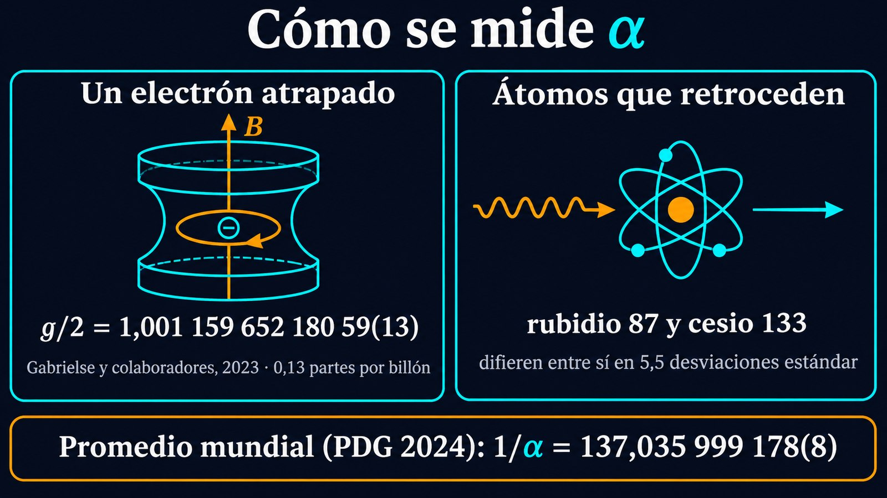

1/137: el número sin unidades que mide la intensidad del electromagnetismo
La mayoría de las constantes de la física tienen unidades: la velocidad de la luz se mide en metros por segundo, la carga del electrón en coulombs, la constante de Planck en joule-segundos (J·s). Su valor numérico depende de las unidades que se elijan. Pero si se combinan la carga del electrón, la constante de Planck, la velocidad de la luz y la permitividad del vacío de una manera precisa, todas las unidades se cancelan y queda un número puro: α ≈ 1/137. Es la constante de estructura fina, la medida de la intensidad con la que la luz y la materia cargada interactúan, y da el mismo valor en cualquier sistema de unidades. No hay una teoría establecida que explique por qué vale lo que vale.
Según la introducción histórica a las constantes físicas del NIST, α fue introducida por Arnold Sommerfeld en 1916. Sommerfeld buscaba explicar la «estructura fina» del espectro del hidrógeno: el desdoblamiento de sus líneas en varias líneas muy cercanas. Para eso extendió el modelo de Bohr con órbitas elípticas y la dependencia relativista de la masa con la velocidad. En sus cuentas apareció naturalmente el cociente entre la velocidad del electrón en la primera órbita de Bohr y la velocidad de la luz, y ese número determinaba el tamaño del desdoblamiento. La teoría de Sommerfeld tuvo éxitos iniciales, pero no podía incorporar el espín del electrón. La teoría relativista del electrón de Dirac, de 1928, resolvió el problema, pero α siguió determinando el tamaño de la estructura fina, y el nombre quedó.
Hoy α se interpreta de otra manera: es la constante de acoplamiento de la fuerza electromagnética, la que mide con qué intensidad las partículas cargadas emiten y absorben fotones, análoga a las constantes de las otras interacciones fundamentales. En la electrodinámica cuántica, la teoría cuántica de esa interacción, las predicciones se calculan como una sucesión de correcciones cada vez más finas; para el electrón, la revisión del Particle Data Group menciona correcciones calculadas hasta el quinto orden.
En el Modelo Estándar, α no se calcula: es uno de los parámetros que se miden y se usan como dato de entrada, junto con la masa del bosón Z y la constante de Fermi, según la revisión del Particle Data Group. Esa es la raíz del enigma: la teoría más precisa de la física necesita que le digan cuánto vale este número, y ninguna teoría establecida lo deduce.
La forma más precisa de medir α es comparar el momento magnético del electrón con su predicción teórica. En 2023, el grupo de Gerald Gabrielse informó g/2 = 1,001 159 652 180 59(13), con una incertidumbre de 0,13 partes por billón (1012): la propiedad mejor medida de una partícula elemental, que pone a prueba la predicción más precisa del Modelo Estándar. Como esa predicción depende de α, la medición permite despejarla: 1/α = 137,035 999 166(15).
Hay otro método, que combina mediciones del retroceso de átomos al absorber luz con la constante de Rydberg y las masas atómicas. Según la revisión del Particle Data Group de 2024, aplicado al rubidio 87 y al cesio 133 da valores que difieren entre sí en 5,5 desviaciones estándar: una tensión que, con los criterios de las cinco sigmas, es muy difícil atribuir al azar. Combinados, el valor de los átomos concuerda con el del electrón, y el promedio mundial de esa revisión es 1/α = 137,035 999 178(8).

El NIST explica que, en la electrodinámica cuántica, un electrón está rodeado de pares virtuales de electrones y positrones que apantallan parcialmente su carga, como una nube. Visto desde lejos, a baja energía, la carga efectiva es la que corresponde a α ≈ 1/137. A distancias más cortas, en procesos de mayor energía, la nube se penetra parcialmente y la interacción se vuelve más intensa. A la energía de la masa del bosón W, unos 81 GeV, α vale aproximadamente 1/128. El NIST concluye que el famoso número 1/137 no es único ni especialmente fundamental. Los experimentos OPAL y L3, del acelerador LEP, pudieron observar directamente esa variación.
Por qué importa que no tenga unidades: el valor de la velocidad de la luz es 299 792 458 m/s porque así se definieron el metro y el segundo; con otras unidades sería otro número. Con α no pasa eso: como sus unidades se cancelan, su valor es el mismo en cualquier sistema. Por eso las preguntas sobre α, como si podría haber sido distinto o si cambia con el tiempo cosmológico, son preguntas físicas y no convenciones. La constante de estructura fina es uno de esos números puros que la física mide con enorme precisión sin saber todavía de dónde salen.
α nació en 1916 como un factor en las cuentas de Sommerfeld sobre el espectro del hidrógeno y terminó convertida en la medida de la intensidad del electromagnetismo. Hoy se conoce con más de diez cifras significativas, gracias al momento magnético del electrón y a átomos que retroceden al absorber luz. Lo que todavía no se sabe es por qué vale alrededor de 1/137 y no otro número. La física lo mide; no lo explica.
Pregunta para la comunidad: Con la fórmula α = v1/c de Sommerfeld, ¿a qué velocidad se mueve el electrón en la primera órbita de Bohr? ¿Es una velocidad para la que los efectos relativistas son importantes o despreciables?